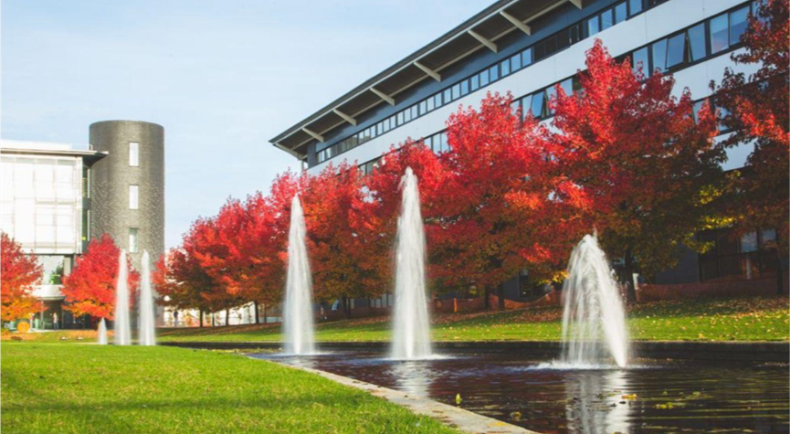

教务处 · 教学通知
项目发布和宣讲会 |“大川视界”世界名校英国华威大学暑假学分项目
发布时间：2025-02-24
为适应高等教育国际化的新趋势，提升学生国际视野，推进我校人才培养国际化战略，现启动选拔本科生和研究生参加2025年“大川视界”世界名校英国华威大学暑期学分项目的工作，相关具体事项通知如下： 一、项目介绍 英国华威大学（The University of Warwick）是位于 考文垂 市的一所公立综合性研究型大学 。在英国大学排名中一直名列前十。目前在卫报2023年排名英国第9，THE 排名世界前6%，QS2025排名世界第69。华威大学在政府最新的教学卓越框架（TEF）排名中获得了所有类别的金奖。 华威大学暑期学分项目为期三周， 通过考核的学生将获得 7.5 ECTS/3 US 学分。 学生可以充分体验华威大学提供的优秀教学和学术专业知识。暑期学校的学生将与华威大学顶级院系的学者讨论和辩论问题。学校也会邀请专业人士和知名公众人物演讲。前几年的演讲嘉宾包括诺贝尔奖得主 George Akerlof ，前内阁大臣 Gus O Donnell 勋爵和著名经济学家 Vicky Pryce 。 华威大学位于英格兰的心脏，距离伦敦1小时火车，距英国第二大城市伯明翰短途距离，历史深厚、人文发达。 2025 暑校可供选择的课程有： 登录官网可查看每门课程的详情和要求： https://warwick.ac.uk/study/summer-with-warwick/warwick-summer-school/about/ 二、项目时间和费用 （一）项目时间：2025年7月13日-8月2日（三周）；课程7月14日开始 （二）项目费用：不含保险、签证、机票、个人消费及部分餐费等 学费 10 人以下 £2460/ 人，约合人民币2.24万 10-19 人 £1968/ 人，约合人民币1.8万 20 人以上 £1845/ 人，约合人民币1.7万 申请费（不可退） £50/ 人 住宿和伙食费 自行选择房型+餐食套餐 各套餐从 £690-£1717不等；登录链接预订 https://warwick.ac.uk/study/summer-with-warwick/warwick-summer-school/accommodation/ 退费政策 ： https://warwick.ac.uk/study/summer-with-warwick/warwick-summer-school/dates/wss_terms_and_conditions_2025.pdf 三、报名条件： （一）拥护中国共产党的领导、热爱祖国、品德优良；遵章守纪，无纪律处分； （二）全日制非毕业年级在校本科生和研究生，专业不限（出发前须年满 18 周岁）； （三）学习和语言能力：无硬性语言成绩要求，在外方报名时需上传成绩单和简历，由华威大学根据学生在申请时展现出的英语能力决定是否录取。 （四）综合素质：具备开放包容的交流心态和独立海外生活能力；身心健康；学生在国外学习期间，尊重当地风俗，遵守双方的法律法规和规章制度，接受双方学校的管理。 四、英国华威大学暑假学分项目 - 四川大学专场线上宣讲会： 1、时间： 2025 年 2 月 26 日， 19:00-20:00 2、Microsoft Teams 浏览器加入： Join the meeting now 3、Teams 应用加入： Meeting ID: 332 235 539 767 ； Passcode: GC2cm6Z7 4、宣讲人：华威大学暑校负责人 Rachael Brogan 五、报名时间和流程： （一）校内申请时间： 截止2025年3月12日18:00 （二）报名流程： 1. 本科生在教务处申请： 本科生登录教务处国内国际合作交流管理系统 http://jxyw.scu.edu.cn:8081/gjjl/ ，选择 “英国华威大学2025年暑假课程学分项目（“大川视界”）”进行在线申请。 特别提醒： （1）请下载登录界面操作手册后进行操作，若遇技术问题，可打电话13183867686 或QQ：1134372115咨询。 （2）为实现项目报名工作流程化、信息化，学院、学校将通过系统完成项目审批（报名学生无需再交纸质材料），请学生在线报名后及时告知学院教务办，请学院相关人员在系统中于截止日期内完成学院审核。 （3）川大所修课程中文成绩以系统计算为准，若有疑问，请持成绩单原件与教务处合作与交流科联系。 2. 研究生在研究生院申请： （1）申请人：登录四川大学研究生管理系统——国际学术交流申请应用，选择“寒暑假访学项目申请”，选择相应的访学项目，填写申请，提交并打印出纸质《申请表》，将纸质《申请表》递交导师、学院审核。 （2）导师：登录四川大学研究生管理系统——国际学术交流应用，在“寒暑假访学项目”中审核并在纸质版《申请表》上签署意见、签字。 （3）学院：学院研究生教务老师登录四川大学研究生管理系统——国际学术交流应用，在“寒暑假访学项目”中审核，并由学院主管领导在纸质版《申请表》上签署意见、签字、盖公章。 （4）学院审核后，纸质《申请表》以学院为单位报研究生院3-325培养办公室。 （5）申请人回国后，登录四川大学研究生管理系统——国际学术交流应用，在“寒暑假访学项目”申请页面中填写并提交回国总结及以下材料： ① 回校证明（包含项目名称、访学开始和结束时间并由辅导员老师签字） ② 官方颁发的项目证书或成绩单 3. 校内报名结束后，由国际处组建报名同学微信群，在群里指导同学们作为合作院校的团队学生，如何在外方报名、缴费和获得学费优惠。未在校内报名而直接在外方学校报名的同学，将不能获得合作院校的学费优惠和申请大川视界资助。 六、特别提醒： （一）为保证出行顺利，请在外方录取成功后及时告知学院辅导员，并在出境前登录四川大学学生出国（境）网上备案系统完成备案，流程见 https://global.scu.edu.cn/?channel/490/504/564/595 。 （二）护签办理：校内报名期间先同步办理护照，后期在外方院校报名时需同时上传护照页；待录取和缴费成功后持外方院校出具的邀请材料办理英国签证。 七、项目和报名咨询： 国际合作与交流处85401551（项目咨询） 教务处合作交流科85402398 （本科生报名咨询） 研究生院培养办85405146 （研究生报名咨询） 外方学校项目咨询： wssadmissions@warwick.ac.uk <!--
